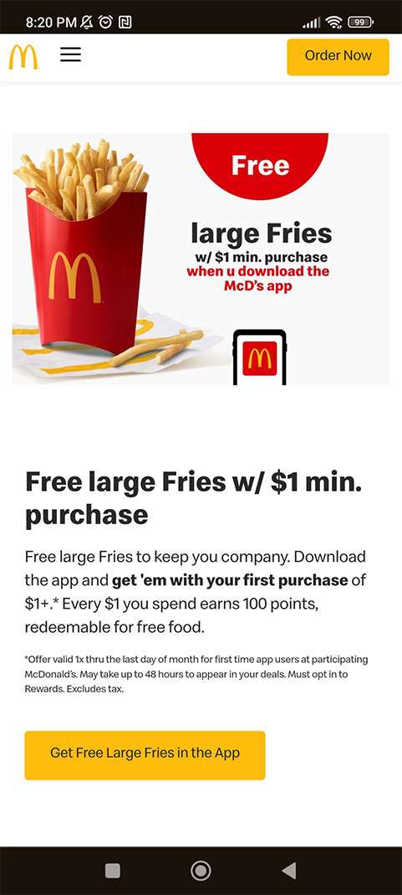

Design Principles
Hick's Law
Google is a great example of Hick's Law because it feels simple and to the point. It does not have distracting ads, crazy colors, or unnecessary buttons. It is straight to the point of just using their site to search with words or images.
Clean Design
Gravity Payments
The use of white space makes it easy to read the content on the site and follow it while you scroll. It keeps a nice clean feel and look. This type of style has always been pleasing to look at for me.
PARC: Repetition
McDonald's
McDonald's has a consistent feel from their use of repetition. Each little section uses an eye catching image, followed by a header, description and a button to order. They also use repetitive styles for all their menu sections.